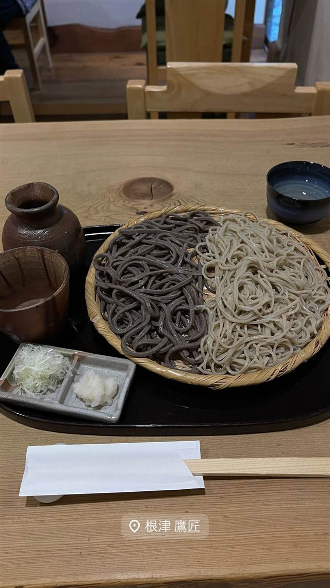
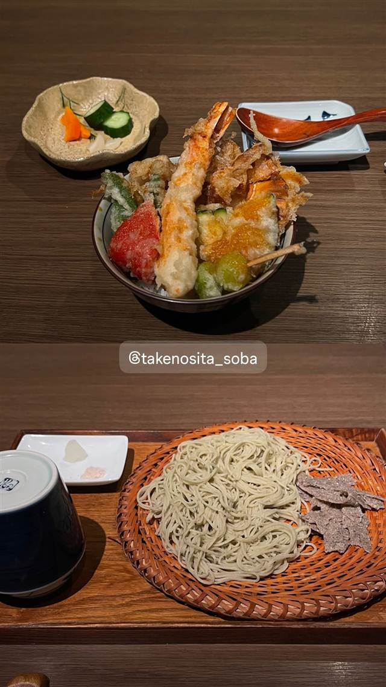
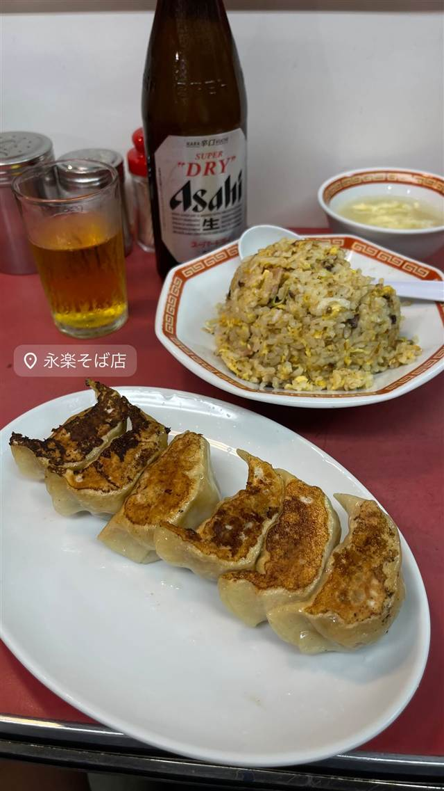
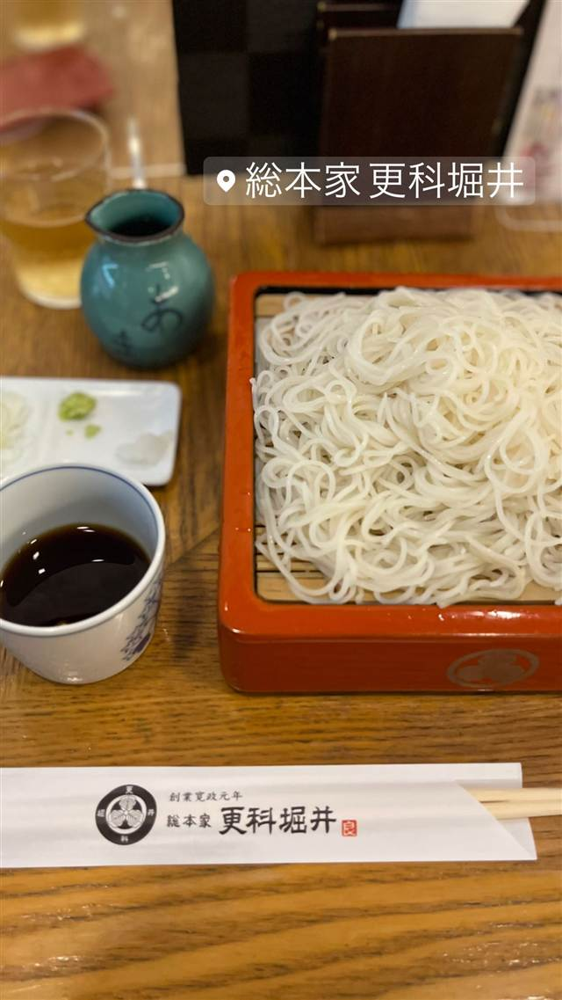
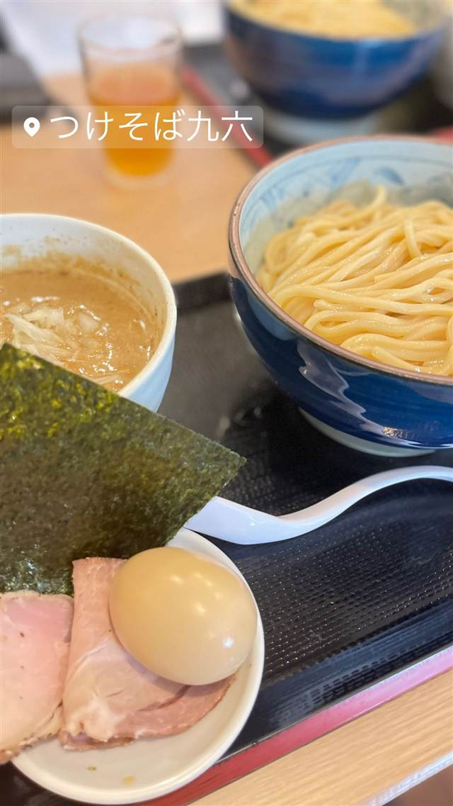

そば・うどん · そば · 根津・千駄木
手打ちそば 根津 鷹匠
食べログ蕎麦百名店、二八と田舎「深山」の食べ比べ二色ざる
根津 鷹匠
根津の路地裏に佇む2000年創業の手打ちそば店。二八そばと、店で「深山」と呼ぶコシの強い田舎そばを一皿で食べ比べられる二色ざるが名物で、食べログ「蕎麦 百名店」にも選ばれている。
TRIVIA
豆知識
- 田舎そばは店内では「深山」という名で呼ばれる
- 根津の路地裏にある古民家風の隠れ家そば店
REVIEWS
世間の評判
3.70食べログ
二色蕎麦の香りと長い待ち時間
- 細打ちと田舎そばを食べ比べる二色蕎麦の香りを評価する声が多い
- 木を基調にした落ち着いた隠れ家のような雰囲気を評価する声が多い
- 予約を受け付けておらず90分待ちになることもあるという声が多い
- 人気の田舎そばは昼のうちに売り切れることがあるという指摘もある
食べログ 口コミ879件
| 創業 | 2000年（平成12年）創業 |
|---|---|
| 看板 | 二色ざる（二八そばと田舎そば「深山」の食べ比べ）、そばおとろ |
| こだわり | 田舎そばは「深山」と称され、そばの香りが強くコシが強いのが特徴。二八と田舎の二色を一皿で楽しめる。 |
| 掲載・評価 | 食べログ「蕎麦 TOKYO 百名店」選出 |
| どこから | 都心 |
| 行くなら | 昼だけ |
| 営業時間 | 月・火 休み 水〜日 12:00-18:00 |
| 予算 | 昼 ¥1,000～¥1,999 夜 ¥2,000～¥2,999 |
| 定休日 | 月曜・火曜 |
| 場所 | 根津駅 東京都文京区根津2-32-8 |
| メモ | 根津駅徒歩5分、月・火曜定休、営業は昼のみ（一部早朝営業あり） |
食べたもの：二色ざる蕎麦
NEARBY
近い店・同じ系統の店
-
 そば 乃木坂駅
おそばの甲賀
赤坂砂場で14年修行した店主が営む、ミシュラン掲載の石臼挽きそば
昼 ¥2,000～¥2,999 夜 ¥6,000～¥7,999
そば 乃木坂駅
おそばの甲賀
赤坂砂場で14年修行した店主が営む、ミシュラン掲載の石臼挽きそば
昼 ¥2,000～¥2,999 夜 ¥6,000～¥7,999
-

そば 原宿・明治神宮前 竹ノ下そば 10日以上寝かせて甘みを引き出す、長野の在来種使用の田舎蕎麦 昼 ¥5,000～¥5,999 夜 ¥20,000～¥29,999 -

そば 大井町 中華そば 永楽 創業から食器も味も変わらぬ、70年続く町中華のもやしそば 昼 ¥1,000～¥1,999 夜 ¥1,000～¥1,999 -
 そば 広尾
蕎麦たじま
江戸前蕎麦にフレンチ風プリフィクス野菜料理を組み合わせた独自の店
昼 ¥1,000～¥1,999 夜 ¥4,000～¥4,999
そば 広尾
蕎麦たじま
江戸前蕎麦にフレンチ風プリフィクス野菜料理を組み合わせた独自の店
昼 ¥1,000～¥1,999 夜 ¥4,000～¥4,999
-

そば 麻布十番駅 総本家 更科堀井 麻布十番本店 1789年創業で更科そばの元祖の一つとして白いさらしなそばを伝える 昼 ¥1,000～¥1,999 夜 ¥5,000～¥5,999 -

そば 和泉多摩川駅 自家製麺つけそば九六 高田馬場「俺の空」出身の店主が作る甲州赤鶏と鯖のWスープ 昼 ～¥999 夜 ～¥999